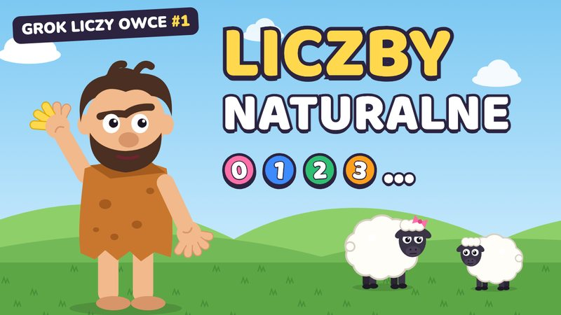
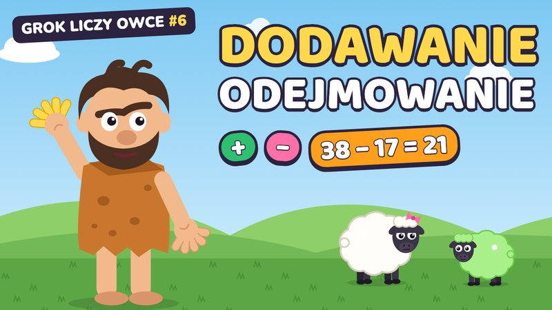
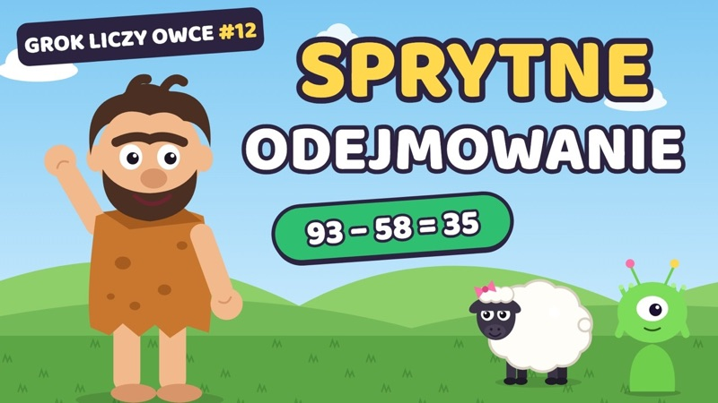

Sprytne dzielenie w pamięci
Jak dzielić szybko w pamięci? Grok ma 72 owce i 3 zagrody. Rozdziela je po jednej i skończyłby chyba na zimę, a Kosmita od razu wie: po 24. W filmie poznajesz dzielenie przez 10, 100 i 1000, dzielenie liczb z zerami na końcu, skreślanie tyle samo zer w obu liczbach i dzielenie po kawałku. Każdy wynik sprawdzamy mnożeniem.
Przykład krok po kroku
Grok ma 72 owce i 3 zagrody. Ile owiec trafi do każdej zagrody?
- Rozkładamy 72 na kawałki, które łatwo dzielą się przez 3: 30, 30 i 12.
- 30 : 3 = 10, 30 : 3 = 10 i 12 : 3 = 4.
- 10 + 10 + 4 = 24. W każdej zagrodzie są 24 owce. Sprawdzenie: 24 · 3 = 72.

Poćwicz w grze: Skreśl zera
Pastwisko do tego odcinka w darmowej grze „Policz stado!”. Bez logowania, działa na telefonie i na tablicy interaktywnej.
Zagraj: Skreśl zeraPytania i odpowiedzi
Ile zer skreślić przy dzieleniu przez 100?
Dwa, bo 100 ma dwa zera. Skreślamy je z końca dzielnej: 245 000 : 100 = 2450. Nie skreślamy innych cyfr, więc 90 : 10 = 9, a nie 0.
Dlaczego 4000 : 8 to 500?
Samego 4 nie podzielimy przez 8, więc bierzemy 40 : 8 = 5. Zostały dwa zera, więc wynik to 500. Sprawdzenie: 8 · 500 = 4000.
Czy można skreślić zera w dzielnej i w dzielniku?
Tak, ale tyle samo w każdej liczbie. 42 000 : 600 = 420 : 6 = 70, bo w 600 są dwa zera, więc skreślamy po dwa zera.
Inne tematy: matematyka klasa 4

Liczby naturalne Oś liczbowa
Oś liczbowa

Dodawanie i odejmowanie: składnik, suma, odjemna, odjemnik, różnica Szacowanie
Szacowanie
 Sprytne dodawanie w pamięci
Sprytne dodawanie w pamięci
 Wielka powtórka: liczby naturalne i działania
Wielka powtórka: liczby naturalne i działania
 Zadania tekstowe w trzech krokach
Zadania tekstowe w trzech krokach

Sprytne odejmowanie w pamięci Tabliczka mnożenia
Tabliczka mnożenia
 Tabliczka dzielenia
Tabliczka dzielenia
 Sprytne mnożenie w pamięci
Sprytne mnożenie w pamięci